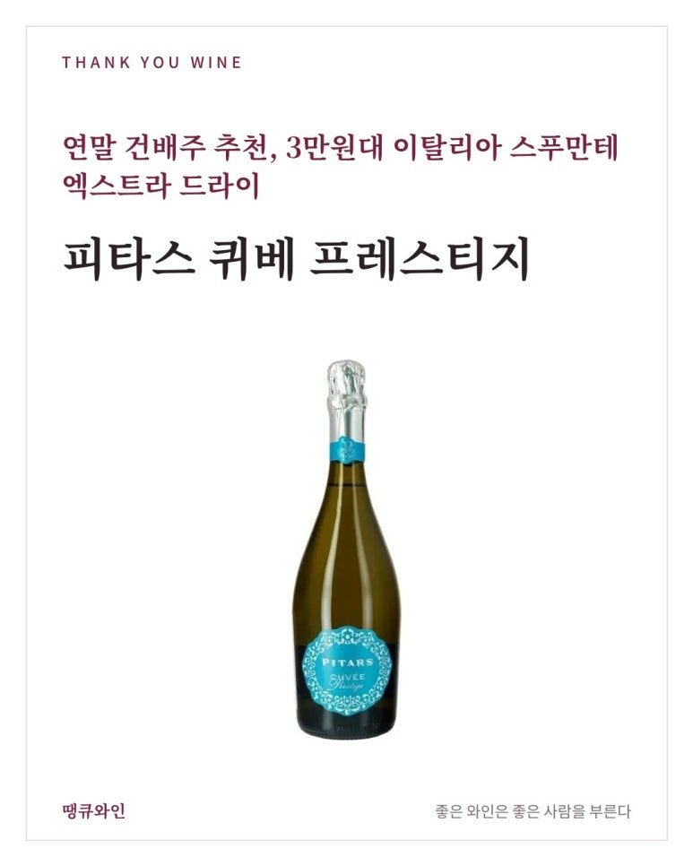
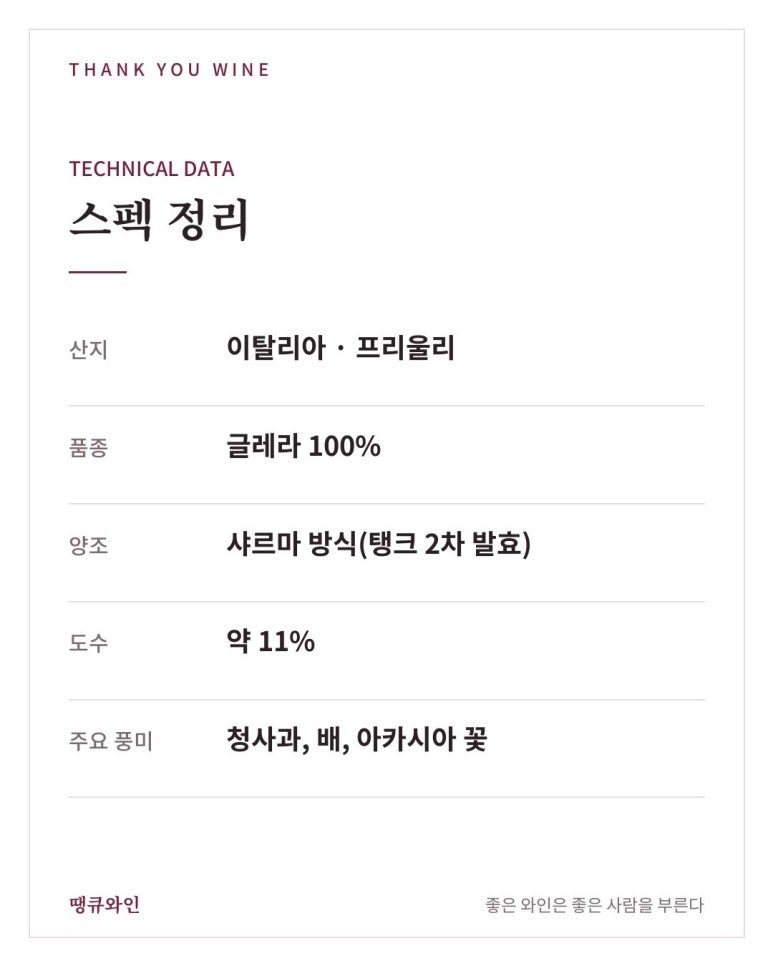
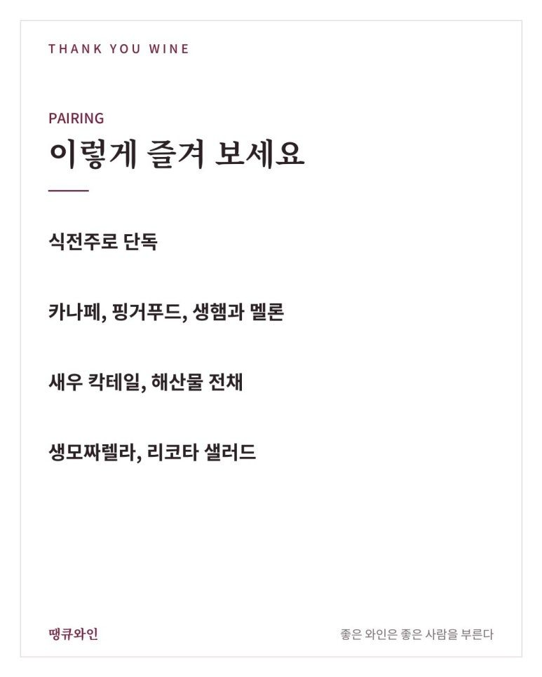
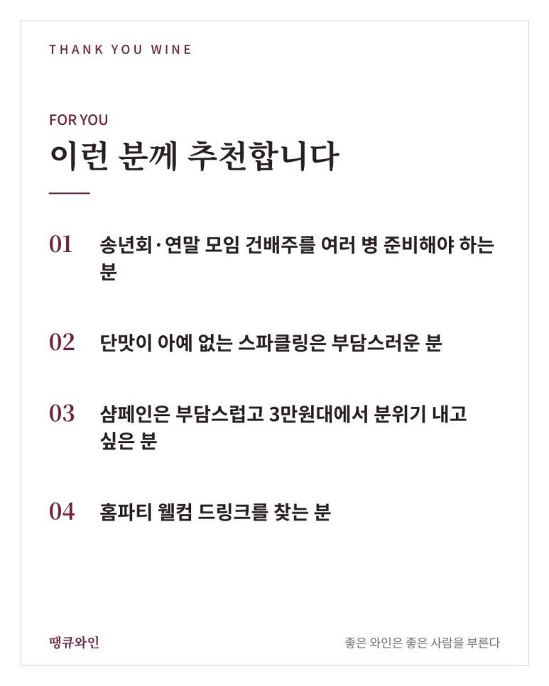
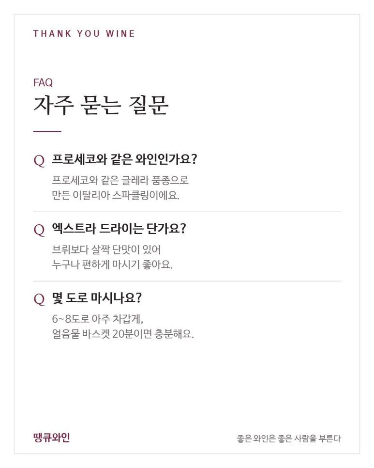

피타스 퀴베 프레스티지
연말 건배주 추천, 이탈리아 스푸만테 엑스트라 드라이
연말 모임이 하나둘 잡히기 시작하면 가장 먼저 필요한 게 건배주입니다.
연말 모임이 하나둘 잡히기 시작하면 가장 먼저 필요한 게 건배주입니다.
"건배용으로 뭐가 좋아요?"라는 질문에 가장 많이 권해 드린 와인이 바로 피타스 퀴베 프레스티지입니다.

한눈에 보는 피타스 퀴베 프레스티지
- 생산자
- 피타스(Pitars), 이탈리아 프리울리
- 종류
- 스푸만테(이탈리아 스파클링 와인)
- 품종
- 글레라 100%
- 당도
- 엑스트라 드라이(살짝 단맛)
- 브뤼(Brut)
- 단맛이 거의 없음
피타스 퀴베 프레스티지 테이스팅 노트
맑은 연노랑 빛에 잔거품이 길게 올라옵니다.
향은 청사과, 배, 아카시아 꽃, 입에서는 부드러운 거품과 함께 은은한 단맛이 퍼지고 산미가 깔끔하게 정리합니다.
PITARS CUVEE PRESTIGE
- 산지: 이탈리아 · 프리울리
- 품종: 글레라 100%
- 양조: 샤르마 방식(탱크 2차 발효)
- 도수: 약 11%
- 주요 풍미: 청사과, 배, 아카시아 꽃

몇 도로 마시면 좋을까?
6~8도로 아주 차갑게 드세요. 냉장고에 반나절, 급하면 얼음물 바스켓에 20분이면 충분합니다.
어울리는 음식
- 식전주로 단독
- 카나페, 핑거푸드, 생햄과 멜론
- 새우 칵테일, 해산물 전채
- 생모짜렐라, 리코타 샐러드
송년회 첫 잔으로 따르고, 전채 요리까지 이어서 드시면 딱 좋습니다.

이런 분께 추천합니다
- 송년회·연말 모임 건배주를 여러 병 준비해야 하는 분
- 단맛이 아예 없는 스파클링은 부담스러운 분
- 홈파티 웰컴 드링크를 찾는 분


자주 묻는 질문
Q. 프로세코와 같은 와인인가요?
A. 프로세코와 같은 글레라 품종으로 만든 이탈리아 스파클링(스푸만테)이라 맛의 결이 비슷합니다.
Q. 엑스트라 드라이는 단가요?
A. 브뤼보다 살짝 단맛이 있는 등급이라 와인을 자주 안 드시는 분도 편하게 마실 수 있습니다.
Q. 몇 도로 마시나요?
A. 6~8도로 아주 차갑게 드세요. 얼음물 바스켓에 20분 정도 담가 두면 충분합니다.
연말 첫 잔은 가볍고 즐겁게
피타스 퀴베 프레스티지는 섬세한 거품과 은은한 단맛으로 누구나 편하게 웃으며 들 수 있는 건배주입니다.
그래서 저는 이 와인을
"모두가 같이 웃으며 드는 연말 첫 잔"
이라고 소개하고 싶습니다.
송년회 테이블 위에서 '짠' 소리와 함께 시작해 보세요.
궁금한 점은 땡큐와인으로 편하게 물어봐 주세요. 와인 고르는 것부터 선물 포장까지 함께 도와드릴게요.
이 글은 땡큐와인 네이버 블로그에 먼저 올린 글이에요.